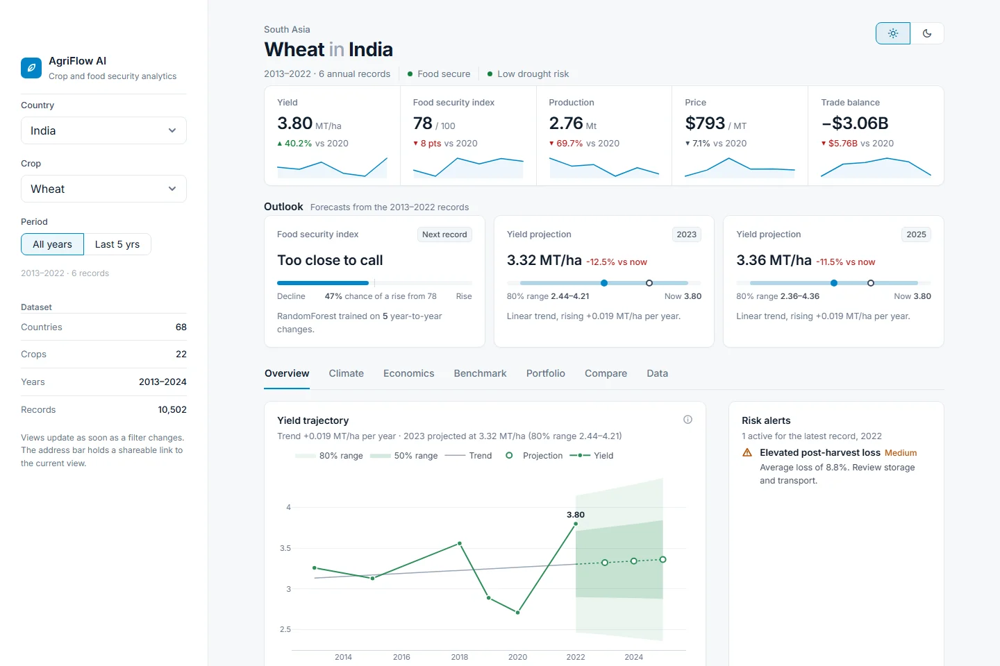

An interactive dashboard over 10,500 records covering 68 countries and 22 crops from 2013 to 2024: yield trends and projections, a machine-learning food security outlook, climate, trade and global benchmarks.

The Overview tab for wheat in India. The dashboard also has light and dark themes and shareable links to any view.
Yield trajectory with a projection range, food security index by status band, and farm operations benchmarked against every country.
A RandomForest estimates the chance the food security index rises by the next record; a linear trend projects yield one and three years out.
Rainfall anomalies, temperature, rainfall against yield, and a correlation matrix of the main drivers.
Indexed trends, production, price, profit margin, a trade waterfall and a Sankey of post-harvest losses.
World map, rankings, percentile bands against all producers, yield against stability, and a percentile profile.
A crop-by-year yield heatmap, yield momentum by crop, a production treemap and a Pareto of production share.
git clone https://github.com/Deepak17kb/AgriFlow.git cd AgriFlow pip install -r requirements.txt streamlit run app.py